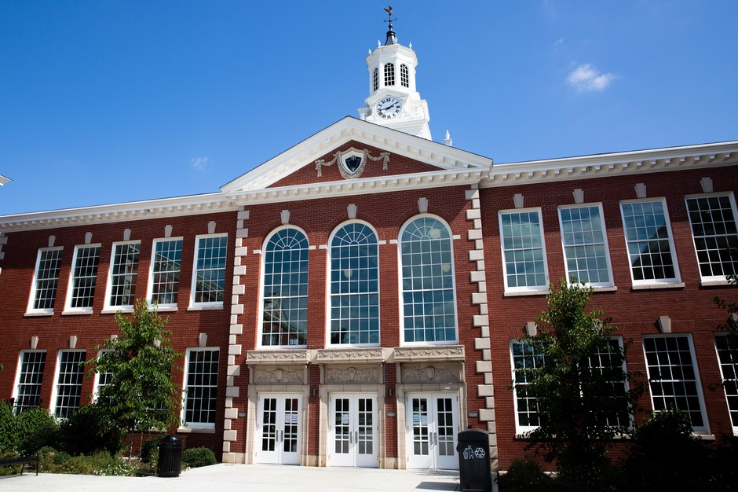

Beranda
Login
Daftar
Tentang Kami

Pembangunan gedung baru di sekolah kali ini digunakan untuk asrama siswa. Dikarenakan banyakya siswa yang berasal dari luar kota, serta mahalnya biaya kos disekitar sekolah. Pihak sekolah memutuskan untuk membangun asrama di dalam sekolah dengan harga yang cukup terjangkau. Hal ini juga bermanfaat untuk mengurangi jumlahnya siswa yang terlambat karena alasan bangun kesiangan.